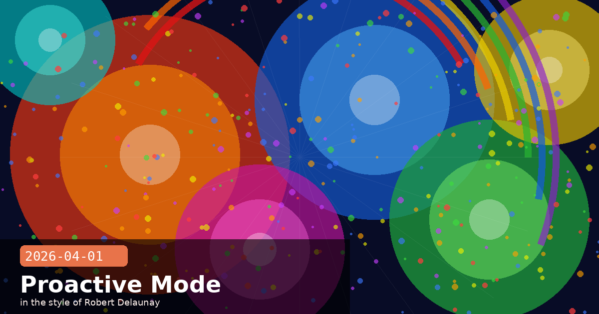

Proactive Mode Revealed, Australia MOU & Autonomous Agent Safety

🧭 Inside the Leaked Source: Proactive Mode and Autonomous Payment Rails
When Anthropic’s full Claude Code TypeScript source became briefly public, most coverage focused on the accident itself. But engineers who actually read the code found something more interesting than the packaging mistake: two unreleased features that tell us where Claude Code is heading next. Bloomberg and Engadget reported on April 1 that the codebase contained working implementations of Proactive Mode — the ability for Claude Code to act autonomously without waiting for a user prompt — and an internal module for autonomous micro-payments, which would let agents make small-value financial transactions on a user’s behalf.
Proactive Mode: what we know
The code suggests Proactive Mode is designed for long-running background tasks where a developer sets a goal and Claude Code proceeds independently until either the task is complete or a configurable confidence threshold drops below a safe floor, at which point it pauses and requests confirmation. The feature is gated behind a flag that was not present in any public Claude Code release as of March 31.
Autonomous payments: a new frontier
More surprising was a module referencing a payment-rail abstraction — code paths that would allow an agent session to call a payment API to complete purchases, pay for services, or fulfil requests that have a monetary component. The implementation references an internal Anthropic financial-services partner that has not been publicly announced.
No public Claude Code release exposes either feature as of the date of this article.
Anthropic has not confirmed or denied the roadmap context of either module.
The source is confirmed genuine — Anthropic acknowledged the accidental publication.
What this means for developers
Proactive Mode would dramatically change how agentic pipelines are designed. Today you write an outer loop that drives Claude; with Proactive Mode, Claude drives itself, and your role shifts to designing the permission boundaries and interruption conditions. Start thinking about those guardrails now — the third entry today covers exactly how.
claude codeproactive modeautonomous agentspaymentsroadmap
🧭 Anthropic Signs AI Safety MOU with Australia — AUD$3M in Research Grants
On March 31, Dario Amodei met Australian Prime Minister Anthony Albanese in Canberra to sign a formal Memorandum of Understanding between Anthropic and the Australian government, aligning the company with Australia’s National AI Plan. The agreement mirrors safety-institute arrangements Anthropic has already established with the United States, United Kingdom, and Japan, and adds a fourth sovereign partner to the network of governments with direct access to Anthropic’s capability evaluations and safety research.
What the MOU covers
Joint capability evaluations — Australian government researchers gain structured access to pre-release Claude models for red-teaming in sectors relevant to Australia: agriculture, natural resources, healthcare, and financial services.
Economic Index data sharing — Anthropic will share localised Economic Index findings, giving Australian policymakers data on how AI is reshaping employment and productivity in the Australian economy.
Transparency disclosures — Anthropic commits to advance notice of major capability jumps, mirroring its existing arrangements with the US and UK AI Safety Institutes.
AUD$3M in academic grants
Alongside the government deal, Anthropic announced AUD$3 million in API credits distributed across four Australian research institutions: Australian National University, Murdoch Children’s Research Institute, Garvan Institute of Medical Research, and Curtin University. The grants are specifically earmarked for research using Claude in biomedical and environmental domains — two of Australia’s most economically significant science sectors.
Why this matters globally
Anthropic now has formal safety partnerships with four governments. The pattern — bilateral MOU, joint evaluations, economic data sharing — is becoming a repeatable template. Each new country added increases the political and reputational cost of cutting corners on safety, and builds an international coalition of stakeholders with a direct interest in Anthropic’s responsible deployment.
🧭 Designing Guardrails for Autonomous Agents Before They Ship
The revelation of Proactive Mode in Claude Code’s source is a timely prompt to think structurally about what it means to build an AI agent that acts without continuous human direction. Whether Proactive Mode ships next month or next year, the design challenges it surfaces are real and present today — any sufficiently capable agentic loop already faces them. Here is a practical framework for getting guardrails right before you need them.
The three dimensions of autonomous-agent risk
Scope creep — the agent interprets a goal more broadly than intended and takes consequential side-actions. Mitigate with explicit goal statements that enumerate what is out of scope, not just what is in scope.
Irreversibility — some actions (file deletion, sent emails, completed payments) cannot be undone. Build a reversibility classifier into your agent loop: if an action scores below a configurable reversibility threshold, require human confirmation.
Confidence decay — long tasks accumulate uncertainty. Log the agent’s internal confidence estimate at each decision point, and surface a checkpoint request when cumulative uncertainty crosses a threshold rather than waiting for an error.
Practical patterns to implement now
# Pattern: reversibility gate before any tool call
def should_confirm(action: str, metadata: dict) -> bool:
reversible_verbs = {"read", "list", "search", "draft", "preview"}
verb = action.split("_")[0].lower()
return verb not in reversible_verbs
# If True, pause and request user approval before execution
The permission surface principle
Grant your agent only the permissions it needs for the current task phase. An agent doing research should not have write access to production systems. An agent generating draft content should not have send access to external APIs. Scope permissions per phase, and revoke them explicitly when the phase ends rather than accumulating capabilities over a long session.
Payment-capable agents need a spending cap, always
If future Claude Code versions include autonomous payment capability, treat the spending cap as a hard-coded constant — not a configurable parameter that could drift or be overridden mid-session. Design the cap into the architecture, not the configuration.